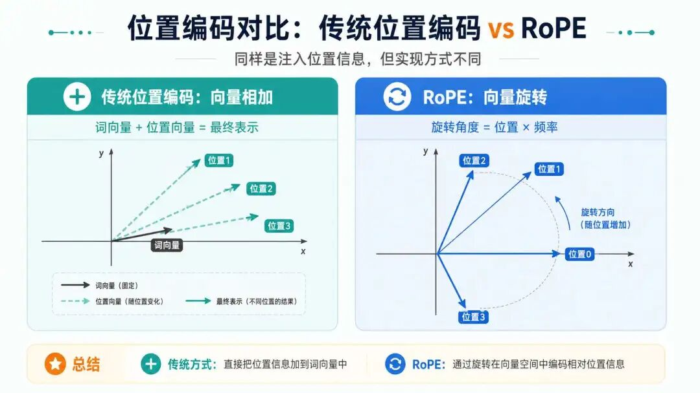
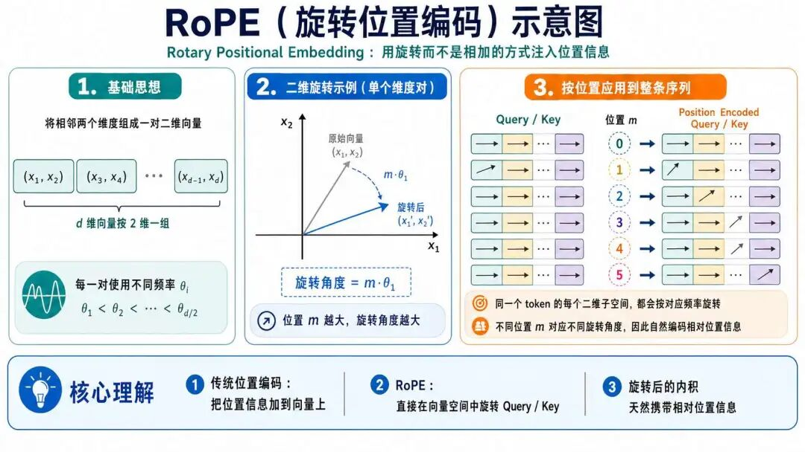
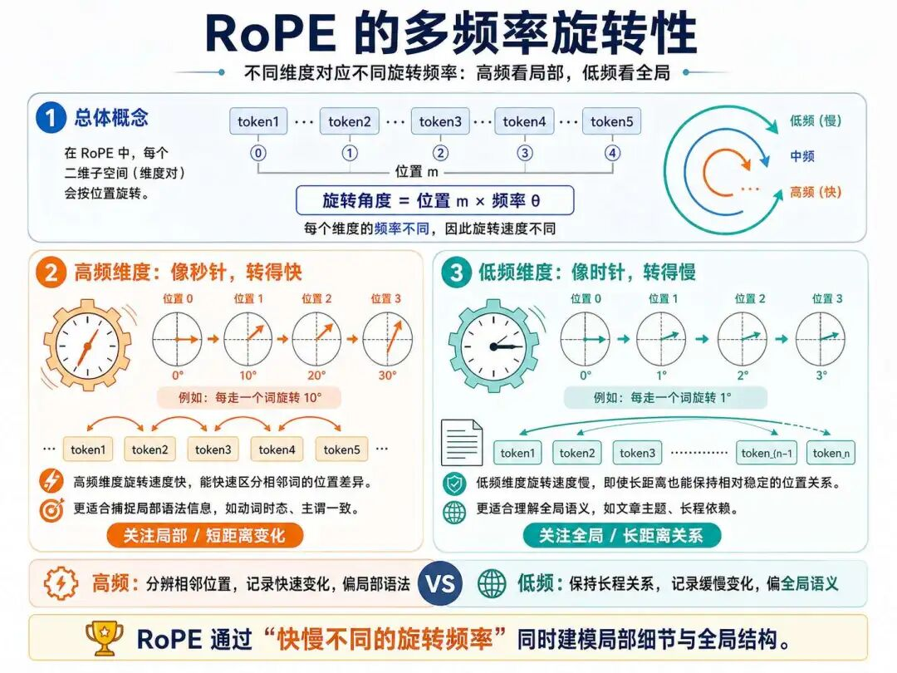
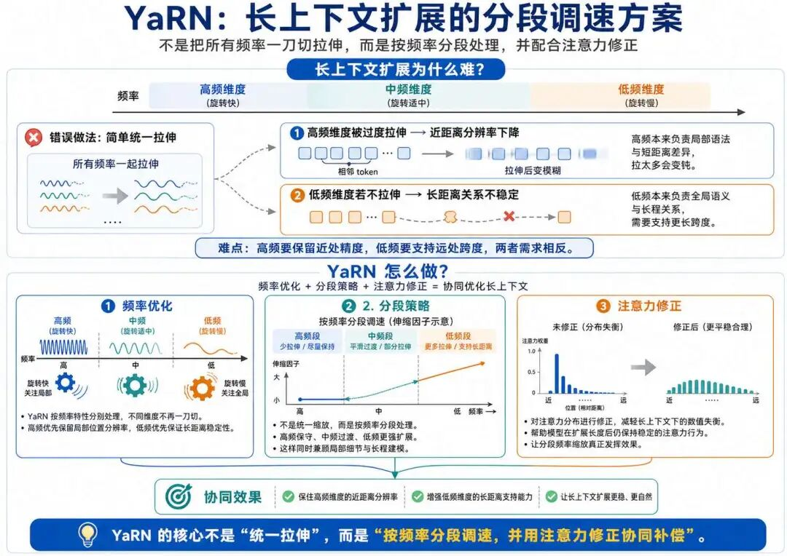

DeepSeek 的崛起是全球 AI 竞赛的'转折点'，中国以较少资源即可与大型科技公司竞争，呼吁美国加大开源 AI 投入。-谷歌前CEO施密特
上一篇我们对 DeepSeek 的整体架构做了一个概览，这一篇我们就来深入看看它与标准 Transformer 究竟有哪些区别。
DeepSeek和标准的Transformer的区别在哪呢？我们先从模型结构来揭秘。
大家不需要对接下来提到的新概念感到恐慌，因为这些看起来高大上的内容，我将依然以接地气的方式给大家剖解。
需要先说明一点：DeepSeek R1并不是Transformer的"对立面"，它本质上仍然属于Transformer体系下的大模型。只不过相比2017年原始论文中的Encoder-Decoder Transformer，DeepSeek R1这类现代大模型在堆叠方式、注意力机制、FFN结构、位置编码和训练方式上都做了大量升级。
Transformer的编码器和解码器各堆叠 6 层（共 12 层），每层结构相同但参数不同。
而DeepSeek R1沿用了DeepSeek-V3-Base的基础架构，整体是更接近现代大语言模型的Decoder-only Transformer结构。它的总层数达到61层，远超原始Transformer，支持更复杂的表征学习。
在前3层中，DeepSeek保留了相对标准的FFN层，用来完成基础特征变换；从第4层开始到第61层，则将大部分FFN替换成MoE层。
这里不能简单理解为"第4-61层专门负责逻辑推理"，更准确地说，MoE通过路由机制让每个token只激活一部分专家参数，从而在扩大模型总容量的同时，控制单次前向计算成本。
其次是位置编码（Positional Encoding）的方式，Transformer使用的是固定正弦/余弦编码。
DeepSeek R1采用的是RoPE（Rotary Position Embedding，旋转位置嵌入）作为核心位置编码方式，并结合YaRN进行长上下文扩展。
RoPE不是简单地把位置向量加到词向量上，而是把位置信息通过旋转的方式作用到注意力机制中的Q和K向量上，从而让模型在计算注意力分数时天然感知相对位置。
YaRN则是面向RoPE长上下文扩展的一种改进方法。它不是简单地"无需训练就从4K扩到128K"，更准确地说，YaRN可以显著降低长上下文扩展所需的训练成本。
在DeepSeek-V3/R1这类模型中，是通过YaRN配合额外的上下文扩展训练阶段，把上下文窗口逐步扩展到128K。
这就使得在长文本生成中（如代码或文档），DeepSeek的位置编码的泛化能力显著优于 Transformer。
Transformer采用的是标准多头自注意力（Multi-Head Self-Attention），而deepseek使用的多头潜在注意力（Multi-head Latent Attention, MLA）。
这种机制的核心差异在于：MLA不是简单地把Q/K/V都"压小"以降低计算复杂度，而是重点通过对Key和Value进行低秩联合压缩，减少推理阶段KV Cache的存储压力。
换句话说，传统多头注意力在长文本生成时，需要为每一层、每个历史token保存大量K/V向量；
而MLA会把K/V压缩到一个更紧凑的潜在表示中，需要缓存的内容更少，因此更适合长上下文推理。
其次是这种机制使得潜在空间映射减少键值对存储需求，从而能够间接支持更长序列（如 128K 上下文）。
这里我用了"进化"一词来形容，因为MoE对于大模型的发展可以算得上是一个里程碑的转变。
相比于transformer标准的FNN，DeepSeek R1使用了混合专家的概念，通过灵活的路由机制，使得模型的激活参数量显著下降，极大降低了算力成本。
我将以上差异总结如下表：
| 对比维度 | 原始 Transformer | DeepSeek R1 / DeepSeek-V3-Base |
|---|---|---|
| 整体架构 | Encoder-Decoder结构 | 现代Decoder-only Transformer结构 |
| 堆叠层数 | Encoder 6层 + Decoder 6层 | 总计61层 |
| FFN结构 | 每层使用标准FFN | 前3层保留标准FFN，后续大部分层替换为MoE层 |
| 注意力机制 | 标准多头自注意力 | MLA，多头潜在注意力，重点减少KV Cache压力 |
| 位置编码 | 固定正弦/余弦位置编码 | RoPE + YaRN长上下文扩展 |
| 上下文能力 | 受训练长度、计算量和位置泛化能力限制 | 支持128K上下文 |
接下来，我们就对DeepSeek中的这些创新机制来逐个进行讲解。
我们之前在学习Transformer时提到过，位置编码是Transformer的基石之一，它为自注意力机制提供了时空感知的能力。
更准确地说，词嵌入主要负责表达"这个token是什么意思"，位置编码主要负责表达"这个token出现在什么位置"。
Transformer本身没有RNN那样的顺序结构，如果没有位置编码，它看到的就更像是一袋词，而不是一句有先后顺序的话。

Transformer通过正余弦函数实现了不同的每个位置的编码由多个不同频率的正余弦波叠加构成，形成唯一的位置编码。
其奇偶维度分别使用 $sin$ 和 $cos$ ，确保编码向量的唯一性，另外频率按 $10000^{-2i/d}$ 指数衰减，能一定程度保证高频维度快速变化，低频维度缓慢变化
但是这种方式存在一些问题：
(1) 首先是维度太小了，仅仅512维，这就意味着如果输入的句子过长，比如1024个词的句子，就会被截断，这会导致模型训练时见过的上下文长度有限。
推理时如果遇到远超训练长度的位置，虽然正弦/余弦公式本身可以继续计算，但模型不一定学会在这些更长位置上稳定工作。
再加上自注意力计算量随序列长度平方增长，长上下文会带来明显的计算和显存压力。
(2) 其次是相对位置关系捕捉不足，原始编码虽能表示绝对位置，但无法直接建模相对距离，如"第 5 个词与第 10 个词的间距"。自注意力机制依赖相对位置判断词间关联，而正弦函数仅隐含弱相对性，需模型额外学习。
(3) 然后是数值的无界性干扰了语义信息，位置编码值随位置一直递增。当与词嵌入相加时，大数值会淹没词向量，例如 词嵌入：0.5 + 位置编码：999 ≈ 999.5），导致语义信号被压制，模型难以区分词义与位置。
另外位置编码是直接加到词嵌入上的，语义信息和位置信息被混合在同一个向量里，模型需要自己学会从这个混合向量中分辨"词义"和"位置"。
基于以上局限性，中国科学家苏剑林博士在2021年提出RoPE，论文《RoFormer: Enhanced Transformer ith Rotary Position Embedding》正式发表于2022年。
数学原理：对Q/K向量应用旋转矩阵，使内积 $Q_m^T K_n$ 仅依赖相对位置差(m-n)：
$$ \langle \text{RoPE}(Q, m), \text{RoPE}(K, n) \rangle = \langle Q, K \rangle \cdot e^{i(m-n)\theta} $$这个公式的核心不是"给每个词加一个位置向量"，而是让第 $m$ 个位置的Q向量旋转 $m$ 对应的角度，让第 $n$ 个位置的K向量旋转 $n$ 对应的角度。当两者做内积时，绝对位置会自然转化成相对位置差 $n-m$。

RoPE通过旋转矩阵将位置信息融入查询（Q）和键（K）向量，实现相对位置感知与长度外推能力，它的核心参数可归纳为以下5个关键要素，它们共同决定了位置编码的性能和外推能力：
向量维度决定词向量的分组数量，每组对应一个二维旋转平面。例如d=512的向量会被拆分为256组二维向量。
就像一面钟存在多个指针，时针、分针、秒针，将每个 token 的词向量想象成一枚指针，每个指针独立旋转，旋转速度也不同，有的转得快，用于捕捉语法细节，有的转得慢，用于把握整体逻辑。
基频的默认值：θ=10000，也是LLaMA等模型常用值，它的作用是控制不同分组的旋转速度（θ越大，低频维度旋转越慢）。计算公式：$θ_i = θ^{(-2i/d)}$。
更准确地说，每个二维分组都有自己的角频率，可以写成 $\omega_i = \theta^{-2i/d}$。位置为 $m$ 的token，在第 $i$ 个二维分组上的旋转角度就是 $m \cdot \omega_i$。
相当于钟的齿轮的控制旋转速度。高频维度像秒针快速转动，记录相邻词的语法；低频维度像时针缓慢转动，处理跨段落的主题关联。
用于表示当前词在序列中的绝对位置，直接决定旋转角度（ $m * θ_i$ ）。
但是这里不能简单理解为"第3个词转3圈，第5个词转5圈"。而是第3个位置会让不同频率维度分别旋转不同角度；第5个位置也一样。模型真正利用的是不同位置之间的旋转角度差。
相当于给每个词分配一个"旋转圈数"，比如第3个词转3圈，第5个词转5圈，模型通过圈数差感知词间距。
在NTK-aware插值等方法中，通过缩放θ或位置m，将超长文本压缩到训练过的旋转角度范围内。
就好比当文本过长时，如从2048词扩展到8192词，给慢速齿轮（低频维度）加装减速器，让它们转得更慢，避免超出模型见过的最大圈数。
RoPE核心特性在于周期性旋转：每个维度的旋转角速度不同，高频对应低维，旋转快；低频对应高维，旋转慢

高频维度像秒针齿轮，转得快，比如每走一个词转10°，负责捕捉局部语法，如动词时态、主谓一致。
高频维度旋转速度快，能快速区分相邻词的位置差异，就像秒针快速移动能精确记录秒级变化。
低频维度像时针齿轮，转得慢，比如每走一个词转1°，负责理解全局语义，比如一篇文章的中心思想，不可能会变化的很快。
低频维度旋转速度慢，即使长距离也能保持相对稳定的位置关系，类似时针缓慢转动却能体现小时级时间跨度。
为什么通过这种设计就能达到外推的效果呢？
RoPE的优势在于：它不依赖一个固定长度的位置表，而是可以根据位置编号动态计算旋转角度。因此，当推理时遇到更长的位置，公式仍然可以继续计算。
这使得模型在训练时可以见过多个完整周期，如4K长度下第0维转了约650圈，因此即使推理时遇到更长的位置，如8K，模型也能直接理解，无需额外调整。
注：1k长度的上下文代表1024左右个token长度的序列。
其本质就在于RoPE通过调整旋转速度，使新位置仍能映射到原有钟表刻度范围内，就像把24小时压缩到12小时的刻度上显示，表盘还是那个表盘，但是通过换算公式能够表示24小时。
而YaRN等扩展方法，则是在长文本场景下对这套"位置时钟"进行调速和校准，让它在更长上下文里依然尽量稳定。
假设词向量维度为512维（前64维高频，后448维低频）：
高频维度（如第0-63维）
主要负责捕捉"小明"和"打"的主谓关系（位置0和1），"打"和"小强"的动宾关系（位置1和2）。
低频维度（如第64-511维）
主要负责理解"小明被批评"与前半句的因果逻辑（相隔5个词），以及整句话的教育主题
虽然RoPE比传统正弦/余弦位置编码更适合建模相对位置，也具备更好的长度灵活性，但在实践中，它并不能天然保证模型在远超训练长度的上下文里稳定工作。
原因很简单：模型训练时只在有限长度内见过这些"旋转角度组合"。
当推理长度大幅增加时，某些维度的旋转相位、不同频率之间的组合关系，以及注意力分布都会进入模型不熟悉的区域。
我们可以将低频维度看作是时针，旋转慢、周期长；将高频维度看作是分针或秒针，旋转快、周期短。
类比到RoPE中，高频分量变化快，适合区分近距离token；低频分量变化慢，适合维持远距离关系。
长上下文扩展的难点在于：如果简单把所有频率统一拉伸，高频维度可能失去近距离分辨率；
如果完全不拉伸，低频维度又可能无法稳定支持更长距离。因此，YaRN要做的事情不是"一刀切拉伸"，而是按频率分段调速。
YaRN做了什么事情解决了上述的问题呢？YaRN通过频率优化 + 分段策略 + 注意力修正，三者进行协同优化。

假设原时钟（预训练模型）只能准确显示12小时（训练时上下文长度），现需扩展为24小时（长上下文）。以下为故障诊断与修复过程：
问题1：直接扩展钟面刻度将导致分针失控，即高频信息丢失
若简单将钟面刻度从12小时拉伸到24小时（线性插值），分针转速被迫放慢。
分针（高频分量）原本每分钟转6°，现在仅转3° -> 导致近距离时刻无法区分（如2:01和2:02位置几乎重叠）。
通过NTK-aware插值维修，你可以把NTK-aware技术看作是一种针对性调速的技术：不是所有齿轮都统一降速，而是根据不同维度的频率特点进行不同程度的缩放。
这里的技术本质是高频维度通常需要尽量保留局部分辨率，不能被过度拉伸；低频维度则承担更多长距离扩展任务，可以做更强的缩放。
$$ \theta_d' = \theta_d \cdot b'^{-2d/|D|} \quad (b' = b \cdot s^{\frac{|D|}{|D|-2}}) $$问题2：时针分针协同失调，即token之间的相对位置关系混乱
时针（低频）被过度降速后，与分针的相对位置错乱。例如原来3:00位置为：时针90°+分针0°，拉伸后变为6:00位置为：时针90°+分针180°，时间显示完全错误。
NTK-by-parts技术通过分频段维修来解决这个问题，它的核心思想是：不要把所有RoPE维度统一处理，而是按照波长或频率分段处理。
短波长/高频维度更偏向保留原状，以保护局部位置分辨率；长波长/低频维度更适合做插值或缩放，以承担长距离建模；中间频段则通过平滑函数过渡，避免突然跳变。
其技术本质可以概括为：
在DeepSeek-V3/R1这类架构中，YaRN也不是对所有向量都粗暴拉伸，而是主要作用在MLA中承载RoPE位置信息的那部分Key上，从而减少对其他表示的扰动。
问题3：表盘视野过窄（注意力分布失衡）
钟面扩大后，观察者（注意力机制）过度聚焦局部区域。
例如只能看清3:00-3:15的细节，实际上是短距离关注过度，但忽略3:15-6:00的范围，导致长距离信息模糊。
通过注意力温度调节，等效于调整观察者的视野焦距，让注意力分布在长上下文下不要过度尖锐，也不要过度发散。
这里要注意，它和后文生成采样里的Temperature不是一回事。YaRN里的注意力缩放，是对注意力Softmax前的logits尺度进行校准，目的是让长上下文下的注意力熵保持相对稳定。
在DeepSeek-V3的长上下文扩展设置中，YaRN使用的缩放因子可以写作：
$$ \sqrt{t} = 0.1 \ln(s) + 1 $$其中 $s$ 是上下文扩展的缩放比例，而不是当前序列长度本身。
这里的技术本质是在注意力Softmax前对logits乘以温度t，避免分布过尖，恢复全局感知能力。
YaRN的三种技术如同对时钟齿轮、联动轴、观察镜的协同升级，让RoPE这座"位置时钟"在扩展后仍能维持精密计时--这正是Qwen、Llama等模型实现超长上下文的核心秘密。
讲完DeepSeek的模型结构后，我们还需要知道：模型结构决定"下一个token的概率分布怎么来"，而采样策略决定"最终选哪个token"。所以接下来，我们进入推理采样部分。
在大模型推理过程中，除了模型结构会严重影响模型的性能，采样技术也是影响生成文本质量和多样性的关键因素。
大型语言模型以自回归的方式生成文本，即根据给定的上文（提示词）和之前已生成的所有token，逐步预测下一个token的概率分布。
模型在每一步会为词汇表中的每个可能的token计算一个分数（logits），再通过softmax函数转换为概率分布。
采样策略的核心就是如何从这个概率分布中选择下一个token 。
贪心搜索是最简单的策略，直接在每一步选择概率最高的token作为输出。
这种策略计算高效，但缺点非常明显：它只关注局部最优，容易陷入重复循环，导致生成的文本单调、缺乏创造力，并且可能错过全局更优的序列 。
集束搜索是对贪心搜索的改进，它通过在每个时间步保留概率最大的N个候选序列（称为束宽），来探索更多可能性。最终选择整体概率最高的序列作为输出。
这种方法在机器翻译或文本摘要等目标序列长度相对可预测的任务中表现良好，但在开放域生成中，它仍可能导致文本重复，且计算成本随束宽增大而显著增加 。
Top-k采样首先从概率分布中选出概率最高的k个token构成一个候选池，然后仅在这个候选池内进行随机采样。其核心思想是过滤掉那些概率极低、可能不合逻辑的token 。
但Top-k的缺陷在于k值难以设定。如果k值固定，当模型置信度高（概率分布"尖锐"）时，可能会强制包含一些不必要的低概率token；
而当模型置信度低（概率分布"平坦"）时，又可能过早地截断，限制了多样性 。
为了解决Top-k的不足，Top-p采样（又称核采样）采用了一种动态方法。它设定一个概率阈值p（通常为0.7-0.9），然后按概率从高到低累加token，直到累积概率刚好超过p。
采样仅在这个动态生成的"核心"集合内进行。这种方法能根据当前概率分布的形态自适应地调整候选集大小，通常在多样性和连贯性之间能取得更好的平衡 。
在实践中，Top-p往往比Top-k更受推荐。
温度参数并不直接选择候选集，而是在softmax函数计算前，用于调整原始logits的分布形态。具体做法是将所有logits除以温度值T（T > 0），再进行softmax得到新的概率分布 。
温度参数是控制生成风格的总开关，通常先对logits做temperature、repetition penalty等调整，再执行Top-k、Top-p、Min-P等候选集过滤，最后从过滤后的候选集合中采样。
这是一种较新的采样方法。它设定一个基础概率阈值 $p_{base}$ ，然后计算当前步最大token概率 $p_{max}$，最终只采样那些概率大于等于 $p_{scaled}$（即 $p_{max}$ * $p_{base}$ ）的token。
Min-P会根据模型的置信度动态调整过滤阈值，旨在更有效地平衡连贯性和多样性。当模型非常确定时，候选集会自动收窄；
当模型本身不确定时，候选集会相对放宽。它在高温采样场景中常被用来减少"太随机导致胡说"的问题。
重复惩罚因子（通常 >1）。严格来说，它不是直接"降低概率"，而是先对已经出现过的token的logits进行惩罚，再经过softmax影响最终概率。
这样可以减少模型反复生成同一个词、同一句话或同一段结构的情况。值越大，惩罚越重，但过大也可能破坏正常表达。
通过这一讲，我们可以看到，DeepSeek R1 并不是脱离 Transformer 另起炉灶，而是在 Transformer 这座大厦之上，针对现代大模型最核心的几个瓶颈做了系统性升级：用 RoPE 和 YaRN 改善长上下文位置建模，用 MLA 缓解 KV Cache 带来的显存压力，用 MoE 在扩大模型容量的同时控制实际计算成本。
也就是说，DeepSeek 的强大并不来自某一个"神奇技巧"，而是来自一整套围绕长上下文、低成本推理、高效训练和强推理能力构建起来的工程与算法组合。
从原始 Transformer 到 DeepSeek R1，我们看到的是大模型技术演进的一条清晰主线：模型越来越大，但不能只是盲目堆参数；上下文越来越长，但不能只是粗暴拉长输入；生成能力越来越强，但也离不开采样策略对输出风格和质量的精细控制。
理解了这些机制，我们再看 DeepSeek 的表现，就不会只停留在"它很强"这个表层结论，而能进一步明白：它强在哪里，为什么能强，以及现代大模型究竟是如何一步步从基础 Transformer 进化到今天这个阶段的。
RoPE（旋转位置编码）：一种把位置信息融入 Q/K 向量的编码方式。它不是简单给词向量"加位置"，而是通过旋转角度，让注意力计算时自然感知两个 token 之间的相对距离。
YaRN：一种用于扩展 RoPE 长上下文能力的方法。它的核心不是粗暴拉长位置编码，而是对不同频率的旋转维度进行调速，让模型在更长文本中尽量保持位置理解的稳定性。
MoE（混合专家模型）：一种"参数很多，但每次只用一部分"的模型结构。它通过路由机制让不同 token 激活不同专家，从而在扩大模型容量的同时控制实际计算成本。
采样策略：决定模型生成时"从概率分布中选哪个 token"。Top-k、Top-p、Temperature、Min-P 等方法，会直接影响回答是更稳定保守，还是更开放有创造性。